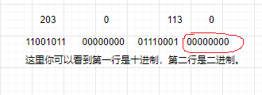
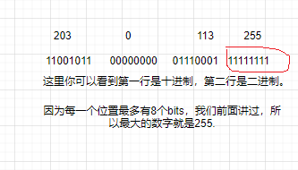
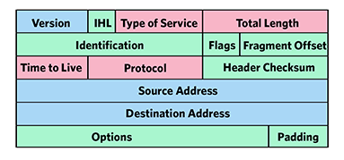
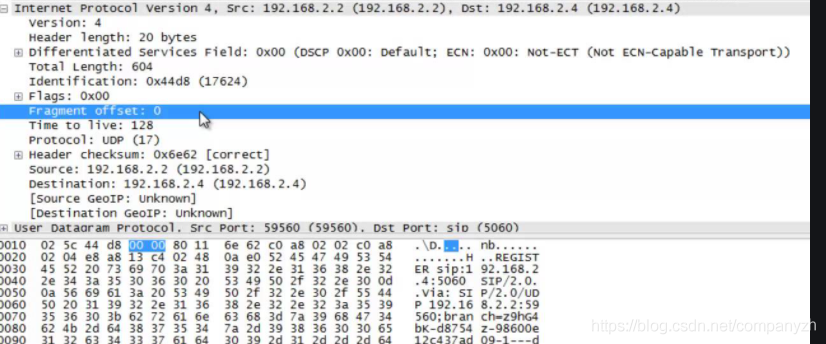

- 01 我应该站在谁的肩膀上 - OSI vs TCPIP模型.md
- 02 万丈高楼平地起- 物理层 + 数据链路层.md
- 03 OSI的灵魂就是我 - 网络层.md
- 04 要快还是要稳你说好了 - 传输层.md
- 05 是时候展现真正的技术了 - 应用层.md
- 06 重回小学课堂 - 二进制101.md
- 07 1+1 = 2吗？ - 二进制的计算.md
- 08 16进制又是个什么鬼？ - 16进制的讲解.md
- 09 我想有个家 - 什么是IP地址.md
- 10 我可是住二环的人 - IP地址的组成和分类.md
- 11 我已经没地方住了吗 - IPv6.md
- 12 向左还是向右 - IP路由.md
- 13 我能给你安全感 - TCP（一）.md
- 14 我那不为人知的秘密是什么 - TCP（二）.md
- 15 不问收没收到，就问快不快 - UDP.md
- 16 我为什么与众不同 - TCP高级篇（拥塞模型）.md
- 17 来，先看看我的家谱 - HTTP的身世.md
- 18 我都这么成功了，你却说我不行 - HTTP 的特点和缺点.md
- 19 我老了，让我儿子来吧 - HTTP2.md
- 20 稳重的大外甥 - HTTPS.md
- 21 HTTP的高级篇 - HTTPClient（Java）.md
- 22 想来我家，你自己查呀 - DNS.md
- 23 来的早，不如来得巧 - NAT.md
- 24 辛苦的邮政 - SMTP.md
- 25 你就是看不见我 - VPN.md
- 26 黑客的好帮手 - SSH.md
- 27 你可以得到我的心，却得不到我的人 - 物理安全设备.md
- 28 你怎么证明你就是你 - 身份验证和访问控制.md
- 29 我要怎么藏好我的考研资料 - 网络攻击（一）.md
- 30 我要怎么藏好我的考研资料 - 网络攻击（二）.md
- 31 如何保护我的考研资料 - 网络攻击防范.md
- 32 Linux网络安全 - 安全实战.md
- 33 结语.md
09 我想有个家 - 什么是IP地址
今天开始我们来看一下你可能听过的最多的一个概念，即使你不是工程师，你可能也听过这个词IP，当然可能IP的意思不一样。所以为了澄清，首先我们要来说一下我们的IP是什么？这里的IP不是Intellectual property，不是指的disney的Star wars。而是网络里面的IP即Internet Protocol。IP是一个很有用而且很复杂的概念。这也是为什么我要用一整章来讲解。
什么是IP?
那什么是IP或者说什么是IP地址呢？IP地址用由句点分隔的四组数字组成。我们前面的二进制里面也讲了这一点对不对。IP地址被分配给网络上设备的网络接口卡，并且我们的IP地址被分为两部分。它具有网络部分，另一部分是主机部分。网络部分标识联网设备。主机部分标识的是特定网络上的单个设备。这与我们的地址没有太大的区别。这与将特定的街道地址作为识别为个人的方式非常相似。将你房子周围的空气和邮政编码标识为区域，在一个区域里有很多房屋，但地址和门牌号都是不同的，你可能是住在一门，我是二门等等。但是它们都属于相同的邮政编码。我们的邮政编码，有点像我们的网络部分，还有我们的主机部分，有点像我们的地址。我们在邮编中具有唯一标识或邮政编码，并且在邮编中具有通用标识。
IP地址以四个十进制数字的格式写入。这些十进制数字中的每一个我们称为八位字节。因此203.0.113.10那里有四个八位字节。它包含八个二进制位。因此，我们的IPv4地址始终为32位长。我们将其分为四组，每组八位，然后将它们转换回十进制，以便将它们编程到计算机中并进行讨论。你想一下，那在每一组里的数字最大是多少？
1982年提出Ipv4时犯了一个巨大的错误，这也是我们需要克服的一个大障碍，这是将二进制转换成十进制而不是其他更有效的方式。（这像不像是你写的代码，会为后面的扩展产生影响和阻碍？其实很正常，你想想IP虽然有问题，但是也使用了将近30年。现在有了IPV6但是还需要一段时间来全面使用或者一起使用。）这里我们来思考一下或者是发散一下你的思维，现在这种形式如何识别地址的网络和主机部分呢？我们的地址始终包含网络部分和主机部分。但是应该如何确定哪个是网络部分哪个是主机部分呢？
地址类型
我们来看一下地址类型。我们可以从功能上来分类地址类型。基本上可以分为三类。
- 网络地址-它是系统中一组设备或一组IP地址的标识符。网络地址有点像我们的邮政编码，而没有与之关联的街道地址。邮政编码代表一个地理区域。我们的网络地址代表IP地址范围。网络地址有时称为网络前缀，或简称为前缀。
- 广播地址是第二种地址。广播地址是网络上所有设备的标识符。举个例子来说，在美国的话，纸质的邮件还是非常普及的。所以每家都会经常收到纸质的广告，比如说某某超市商品促销了之类的。这个就是广播，你会发现住在某一个区域的住户都会收到相同的广告促销。这个就有点像是广播地址。如果我有一个小公司想要发类似的广告，只需要去邮局然后说，我想把这个广告发给邮政编码xxxxx的住户，然后邮局就会帮我去投放了。广播地址的目的是可以一次将消息发送到网络上所有设备的地址。
- 主机地址是第三种。主机地址是确认在网络中的独一的设备。比如一台电脑，打印机或者是一个路由器。如果我们有一台设备比如说电脑想有一个IP地址。那么该计算机必须具有主机地址，并且不能为其分配网络地址或广播地址。前两种地址主要用于描述我们的网络，但是主机地址才是我们需要显示的应用到我们的设备上。
我们现在来深度剖析每一种地址类型，让你有一个更深层次的认识。
网络地址
先看一下这个例子
203.0.113.0
11001011 00000000 01110001 00000000（下面讲解的是这部分）
11111111 11111111 11111111 00000000 （子网掩码）
255.255.255.0 子网掩码
相信前面认真学习的同学可以看出以上IP地址的端倪吧。
网络部分是203.0.113 主机部分是0
复制
你在这里如果对子网掩码陌生，先忽略，我们后面会讲到。
如果你的地址的主机部分全部为零，就好像上面的例子那样，那么这个是网络地址。你永远不能将其分配给任何网卡。我下图标记出来了。如果全0或者全1。那就注定这不是一个普通的地址。

广播地址
先看一下这个例子
203.0.113.255
11001011 00000000 01110001 11111111（下面讲解的是这部分）
11111111 11111111 11111111 00000000 （子网掩码）
255.255.255.0 子网掩码
网络部分是203.0.113 主机部分是255
复制
如果你的地址的主机部分为全部为1，就好像上面的例子那样，那么这个是广播地址。同理，你也永远不能将其分配给任何网卡。就好像上面说的，全0和全1都是特殊的。全0是网络地址。全1是广播地址。

主机地址
先看一下这个例子
203.0.113.10
11001011 00000000 01110001 00001010（下面讲解的是这部分）
11111111 11111111 11111111 00000000（子网掩码）
255.255.255.0 子网掩码
网络部分是203.0.10 主机部分是10
复制
我们上面讲的主机部分全是0的时候叫做网络地址，全是1的时候叫做广播地址，那其他的呢是不是就是我们需要的主机地址了。既然这个是主机地址了，是不是你就可以把它赋值给网卡了。可以赋给打印机，路由器等等。比如在这里，主机部分就是10。
所以，在这里子网掩码是一个不变量，那你的主机地址范围是不是就是在00000000 到 11111111之间的值。也就是1 到254。
私有和公有地址
私有地址只允许在一个公司内部使用，你仔细想一下，这说明什么，说明你在A公司的内部可以使用10.0.0.1，我在B公司也可以同样使用10.0.0.1对不对。这样会冲突吗？不会，因为是内部使用，互相是看不到的，为什么需要这样呢？开动你的小脑瓜想一下（下一小节会讲到）。当然不可能所有的IP地址都可以作为私有的，下面是所有私有地址的范围
10.0.0.0 -- 10.255.255.255
172.16.0.0 -- 172.31.255.255
192.168.0.0 -- 192.168.255.255
复制
看透IP
我们之前说过数据的传输是靠Header来确定这是要传到哪里的数据。那我们来看一下IP的header是什么样子的？我懒得画了，就直接从网上找了一个。

我们还是一个一个的字段来讲解。
- Version（版本号）4bits：用来暗示版本号，我们一直说IPV4，那这里就是4对不对，那IPV6呢？
- IHL（Internet Header Length头部长度） 4bits：头部的长度
- Type of Service（服务类型）8 bits：因为是8 bits，所以可以分成下面的8个值。用于定义包的优先级，值越大，数据越重要，我就不翻译下面的意思了。感兴趣的自己查一下。
- 000 Routine
- 001 Priority
- 010 Immediate
- 011 Flash
- 100 Flash Override
- 101 CRI/TIC/ECP
- 110 Internet Control
- 111 Network Control
- Total Length（总长度）16 bits：总长度，包括头和数据
- Identification（标识） 16 bits: 一个序列号，与源地址，目标地址和用户协议一起，旨在唯一地标识一个数据报(Datagram)
- Flags（标志）3 bits: 当前仅定义了两个位。更多的位用于分段和重组。第二位是DF（Don’t Fragment）位。如果已知目标没有重组片段的功能，则此位可能很有用。但是，如果设置了此位，数据报一旦超过路由网络的最大大小，则该数据报将被丢弃。
- Fragment Offset（片偏移）(13 bits)：此片段在原始数据报中的位置（以64位为单位）。这意味着除最后一个片段以外的其他片段必须包含长度为64位倍数的数据字段。
- Time to Live（生存时间）(8 bits):定义一个电报允许在网络中存活的时间，以S来计算。
- Protocol（协议）8 bits: 指示在目的地接收数据字段的下一个更高级别的协议，此字段标识ip头之后的数据包中下一个头的类型，举个例子。TCP的值是6，UDP的值是17。
- Header Checksum（首部校验）16 bits: 仅应用于头部的错误检测。
- Source Address（源地址）32 bits: 源IP地址
- Destination Address（目标地址）32 bits: 目标IP地址
- Options（选项）variable：编码发送用户请求的选项
- Padding（填充）variable：用于确保数据报头是32位长度的倍数
- Data（数据）variable：数据
下面来看一个具体的例子。不知道你有没有听过wireshark，这是一个用于包裹分析的工具，感兴趣的可以下载来试一下。

从上图你可以看出，你们包含着我们上面讲的header里面的内容，上面的是理论概念，这个图是在实际发送中的具体数据包里面有什么。比如你可以看到version：4也就是IPV4。然后就是Header length，TotalLength。。。等，你可以对着上面的理论模型来找到一一对应。
© 2019 - 2023 Liangliang Lee. Powered by gin and hexo-theme-book.